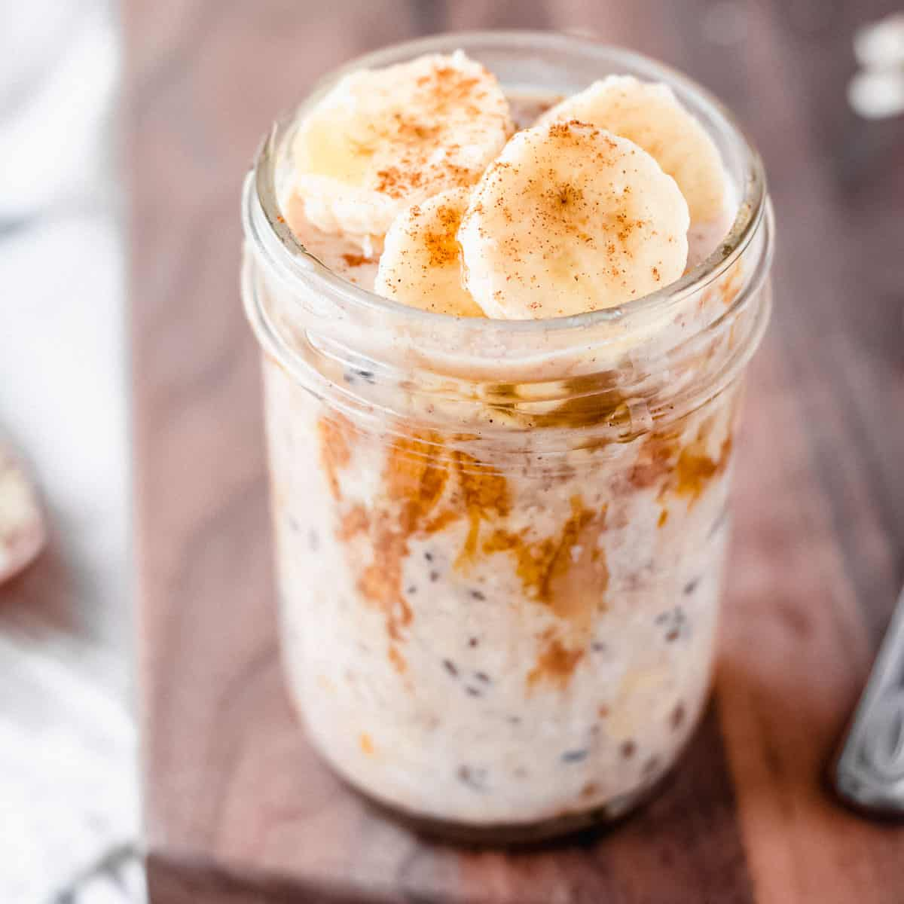

Peanut Butter and Banana Overnight Oats

Description
If you're like me, you struggle to find the energy to do much of anything in the
mornings, much less prepare a healthy breakfast. Overnight oats are a perfect solution to
ensure you have that energy you need for the day just waiting for you in the fridge. While I prefer the
taste of peanut butter and banana, overnight oats are very versatile and can be customized however you like
it! As written, this recipe makes 1 serving of Overnight Oats.
Ingredients
- 1/2 cup Quaker Old Fashioned Oats
- 1/2 cup low-fat milk
- 1 teaspoon chia seeds
- 1/4 teaspoon vanilla extract
- 1/2 teaspoon cinnammon
- 1/4 cup bananas, sliced
- 2 tablespoons creamy peanut butter
- 1/2 tablespoon honey
Steps
- Add oats to a container of your choice and pour in milk
- Mix in vanilla extract, chia seeds, and cinnammon
- Alternate layers of peanut butter and sliced banana
- drizzle with honey
- Chill in fridge overnight or at least for a few hours
- Enjoy!
This recipe was found on quakeroats.com